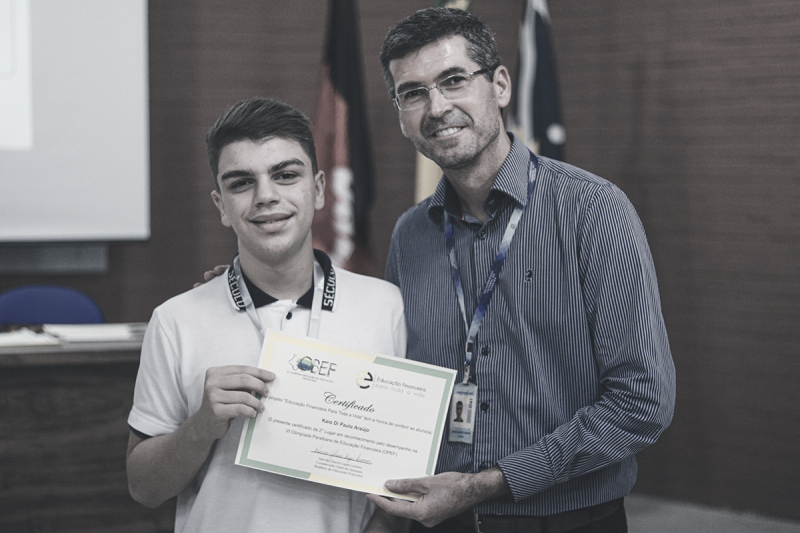

Ciência🌌
Contratempos no Espaço: Explosão em Teste Abala Empresa Rival da SpaceX
Em um revés significativo para a indústria aeroespacial privada, a Blue Origin, empresa fundada por Jeff Bezos, enfrentou um contratempo com a explosão da parte superior do seu foguete orbital New Glenn durante um teste de estresse. O incidente ocorreu nas Ilhas Shetland, Escócia, e representa mais um desafio na empreitada espacial de Bezos, que já experimentou atrasos e problemas técnicos em projetos anteriores.
O foguete New Glenn é uma peça central nos planos da Blue Origin de competir com a SpaceX de Elon Musk, não apenas em missões contratadas pela NASA, mas também no lançamento da constelação de satélites do Projeto Kuiper da Amazon. A explosão aconteceu em um momento crítico, já que o foguete precisa estar operacional para uma missão da NASA agendada para outubro, que visa aproveitar um alinhamento raro entre Terra e Marte para lançar duas espaçonaves ao Planeta Vermelho.
Além da explosão, outra parte do foguete implodiu, o que foi atribuído à falta de válvulas de liberação de pressão durante a transição de um hangar úmido para um ambiente climatizado. Este é o mais recente de uma série de contratempos que incluem a explosão do motor do New Shepard em 2022, que resultou em atrasos significativos para o programa de turismo espacial da empresa.
A Blue Origin agora corre contra o tempo para resolver esses problemas e preparar o foguete para a missão Escapade da NASA. O sucesso desta missão é crucial, pois um novo alinhamento favorável entre Terra e Marte só ocorrerá daqui a dois anos, o que coloca uma pressão adicional sobre a equipe para cumprir os prazos estabelecidos.
Este incidente também destaca os desafios inerentes ao desenvolvimento de tecnologias aeroespaciais e a importância de testes rigorosos para garantir a segurança e a confiabilidade dos veículos espaciais. À medida que a corrida espacial entre empresas privadas se intensifica, a confiabilidade e o sucesso desses testes tornam-se cada vez mais críticos para o futuro das viagens e exploração espacial.
Educação📚
Olimpíada de educação financeira vai premiar escolas e professores da rede pública
Diz tesouro nacional
A Olimpíada de Educação Financeira, uma iniciativa do Tesouro Nacional em parceria com a B3 e apoio do Ministério da Educação e do Banco Central, promete ser um marco na promoção da educação financeira entre os jovens brasileiros. Com inscrições abertas até 9 de setembro, a competição é direcionada a escolas públicas e privadas de todo o país, com o objetivo de distribuir prêmios significativos para escolas e professores da rede pública.
A competição, denominada Olimpíada do Tesouro Direto de Educação Financeira (Olitef), já está aceitando inscrições desde 22 de junho. As escolas públicas participantes têm a chance de ganhar kits educacionais avaliados em R$ 100 mil, enquanto professores e profissionais envolvidos no engajamento da Olitef podem ser agraciados com prêmios de R$ 8 mil em títulos do Tesouro Direto. No total, serão premiadas duas escolas por estado, totalizando 54 escolas da rede pública, além de mais de 200 professores.
A organização do concurso fica a cargo da UpMat Educacional, que possui experiência prévia em eventos educacionais, como o Concurso Internacional Canguru de Matemática. A Olitef não apenas visa reconhecer e valorizar o esforço das escolas e professores, mas também pretende inserir o planejamento e a educação financeira no cotidiano dos alunos, preparando-os para tomar decisões financeiras conscientes no futuro.
Para isso, será disponibilizada uma plataforma que oferece recursos didáticos especializados para capacitar professores, ao mesmo tempo em que prepara os alunos para gerenciar seus recursos, economizar de forma eficaz e compreender as diferentes alternativas de investimentos. A iniciativa sublinha a importância do conhecimento financeiro como um direito de todos os estudantes, e não um privilégio de poucos.
O secretário do Tesouro Nacional, Rogério Ceron, destaca que as premiações visam gerar benefícios ao ecossistema educacional e incentivar uma competição saudável entre as escolas. A educação financeira é considerada um pilar estratégico tanto para a B3 quanto para o Tesouro Direto, e a Olitef é uma ferramenta crucial para ajudar os jovens a começarem sua jornada de conhecimento sobre finanças desde cedo.
Economia📈
“Declarações de Lula Elevam Dólar e Aumentam Incertezas Fiscais no Brasil
Recentes declarações do presidente Luiz Inácio Lula da Silva sobre a política fiscal e os juros no Brasil geraram reações significativas no mercado financeiro. Em entrevista à TV Record, Lula expressou dúvidas sobre a necessidade de cortes de gastos, o que trouxe incertezas quanto ao cumprimento das metas fiscais estabelecidas pelo governo.
Como resultado, o dólar fechou em alta, cotado a R$ 5,48, refletindo a preocupação dos investidores com a estabilidade fiscal do país. A moeda norte-americana registrou um aumento de 1%, atingindo a máxima de R$ 5,487 durante o dia. Esse movimento foi impulsionado pela percepção de que o governo pode não implementar os cortes necessários para atingir o déficit zero, conforme previsto no arcabouço fiscal.
Além disso, o governo revisou suas estimativas de gastos, prevendo um déficit de R$ 28,8 bilhões para 2024, no limite da meta fiscal. Esse cenário forçou o congelamento de R$ 15 bilhões no orçamento, medida necessária para evitar o descumprimento das regras fiscais
Essas incertezas fiscais, combinadas com a alta dos juros nos Estados Unidos, têm pressionado o real e aumentado a volatilidade no mercado financeiro brasileiro. O ministro da Fazenda, Fernando Haddad, reafirmou o compromisso do governo com o cumprimento das metas fiscais, destacando que medidas adicionais de receita estão sendo tomadas para alcançar o déficit zero.
Em resumo, as declarações de Lula e as revisões fiscais do governo têm gerado um ambiente de cautela entre os investidores, refletindo-se na valorização do dólar e na necessidade de ajustes orçamentários para manter a credibilidade fiscal do país.
Política🌎
Alívio Humanitário: Rússia e Ucrânia Conduzem Troca Equitativa de Prisioneiros
Em um desenvolvimento significativo nas relações entre Rússia e Ucrânia, os dois países realizaram uma troca de prisioneiros de guerra, com 115 indivíduos de cada lado sendo libertados. Este evento, mediado pelos Emirados Árabes Unidos, marca a primeira troca de prisioneiros desde a surpreendente ofensiva ucraniana na região de Kursk, na Rússia, no início de agosto.
A operação de troca foi recebida com celebração por ambas as nações e destaca o papel dos Emirados Árabes Unidos como um intermediário eficaz no conflito. A troca ocorreu duas semanas após a Ucrânia lançar uma incursão em Kursk, um movimento que foi o maior ataque ao território russo por um estado estrangeiro desde a Segunda Guerra Mundial.
Os prisioneiros russos, capturados durante a ofensiva de Kursk, foram enviados para Belarus, onde receberão tratamento médico e reabilitação antes de retornarem à Rússia. Por outro lado, o presidente ucraniano Volodymyr Zelensky confirmou o retorno de 115 compatriotas e expressou gratidão aos Emirados Árabes pela mediação.
Este evento é a sétima troca de prisioneiros desde o início do conflito em fevereiro de 2022 e eleva o número total de prisioneiros trocados, com a ajuda dos Emirados Árabes Unidos, para 1.788. A capacidade dos Emirados Árabes de dialogar com uma ampla gama de atores internacionais tem sido crucial para facilitar essas trocas, promovendo cooperação e segurança em meio à guerra.
A troca de prisioneiros é um sinal de progresso nas negociações e um passo em direção à resolução de conflitos, apesar das tensões contínuas e da complexidade da situação geopolítica envolvendo a Ucrânia e a Rússia.